AnyPortrait > 메뉴얼 > 여러 방향의 모습을 가진 캐릭터 만들기
여러 방향의 모습을 가진 캐릭터 만들기
1.3.4
게임에 등장하는 캐릭터를 만들 때, 게임의 특성에 따라 정면, 측면, 후면을 바라보도록 만들어야 하는 경우가 있습니다.
이러한 방식의 작업은 탑뷰는 물론이고, 사이드뷰 액션 게임에서도 종종 사용되곤 합니다.
이 페이지에서는 AnyPortrait를 이용해서 여러 방향의 모습을 가진 캐릭터를 만드는 방법을 다룹니다.
기능 위주로 설명을 드리며, 애니메이션을 만드는 세세한 과정이나 이미지를 제작하는 방법은 다루지 않으므로 참고바랍니다.
여러 방향의 모습을 가진 캐릭터를 만드는 방법에는 크게 두가지 방식이 있습니다.
첫번째 방식은 여러개의 루트 유닛들을 만들어서 스크립트로 전환하는 방식입니다.
다른 하나는 여러개의 자식 메시 그룹들을 가진 하나의 루트 유닛을 만들어서 컨트롤 파라미터로 제어하는 방식입니다.
각각 장단점을 가지고 가지고 있으므로, 아래의 설명에서 여러분에게 맞는 방법을 선택하세요.
PSD 파일 가져오기에서의 팁
본격적인 설명에 앞서서, 자식 메시 그룹을 바로 생성하거나 여러개의 루트 유닛을 만들기 위해 PSD 파일을 어떻게 만들고 가져와야하는지를 설명드립니다.
이 방법을 미리 알아두면 PSD 이미지를 준비하고 메시 그룹을 구성할 때 도움이 될 것입니다.

준비한 PSD 파일입니다.
자세히 보시면, 두개의 이미지 레이어씩 그룹으로 묶인 것을 볼 수 있습니다.
이렇게 레이어들을 그룹으로 묶어두고 AnyPortrait로 가져오면, 해당 그룹들은 자식 메시 그룹들로 변환됩니다.
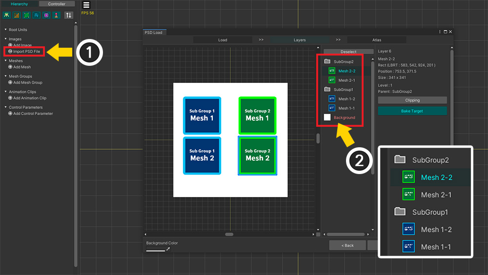
준비한 PSD 파일을 AnyPortrait로 가져와봅시다.
(1) Import PSD File 버튼을 누르고 PSD 파일을 열어봅시다.
(2) PSD 파일의 그룹들이 인식되는 것을 볼 수 있습니다.

PSD 파일을 가져오는 작업을 완료해봅시다.
위와 같이 PSD 파일과 동일하게 구성됩니다.
(1) 두개의 자식 메시 그룹이 생성되었으며 하나의 루트 메시 그룹에 속해있습니다.
(2) 루트 메시 그룹을 선택하면, PSD 파일과 동일하게 메시들과 자식 메시 그룹들이 생성 및 배치되어 있음을 볼 수 있습니다.

(1) 자식 메시 그룹을 선택해보면, (2) 여기에 속한 메시들만 따로 확인하고 편집할 수 있습니다.
이 기능을 활용하면 하나의 PSD 파일을 이용하여 "여러 방향의 모습을 가진 캐릭터"를 쉽고 빠르게 구성할 수 있습니다.
구성을 바꾸고자 한다면 이어지는 설명을 확인해보세요.
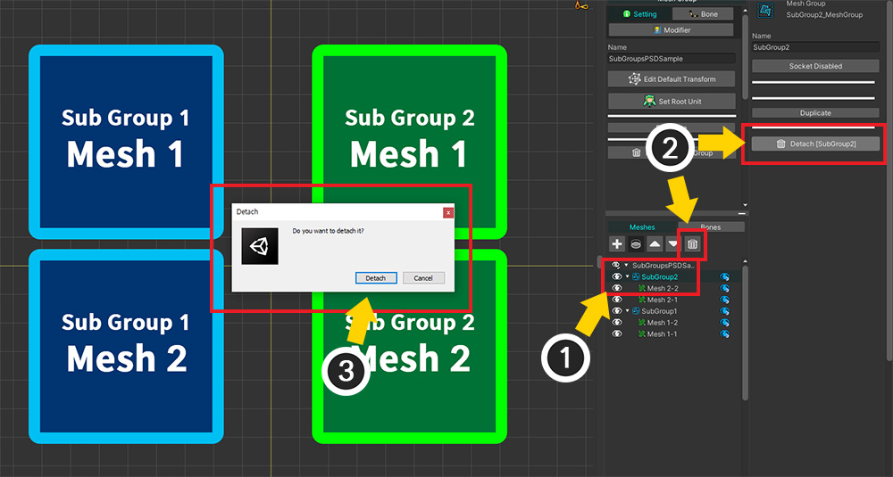
루트 메시 그룹에서 자식 메시 그룹을 제거해봅시다.
(1) 제거하고자 하는 자식 메시 그룹을 선택합니다.
(2) Detach 버튼을 누릅니다.
(3) 안내 메시지에서의 Detach 버튼을 누릅니다.

자식 메시 그룹이 제거된 것을 볼 수 있습니다.

이번엔 반대로 자식 메시 그룹을 추가해봅시다.
(1) "+" 버튼을 누릅니다.
(2) Mesh Group 탭을 누릅니다.
(3) 추가하고자 하는 메시 그룹을 선택하고 (4) Add 버튼을 누릅니다.

메시 그룹이 자식 메시 그룹으로서 등록되었습니다.
다만, 이 경우엔 메시 그룹이 원점에 배치됩니다.

(1) Edit Default Transform 모드를 켜고 (2) 직접 위치를 수정해야합니다.
방법 1. 여러개의 루트 유닛들을 이용하기

여러개의 방향을 가진 캐릭터를 만드는 첫번째 방법은, 각각의 방향에 따른 루트 유닛들을 만드는 것입니다.
애니메이션 도중에 방향을 전환하는 등의 복잡한 애니메이션을 만들지 않는다면, 이 방법은 꽤 직관적이고 스크립트로 다루기도 쉽습니다.
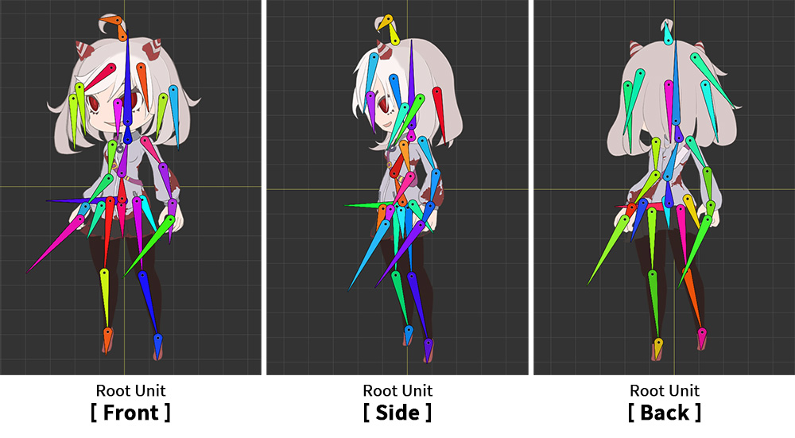
준비한 메시 그룹과 루트 유닛은 위와 같이 "정면 (Front)", "측면 (Side)", "후면 (Back)"입니다.
각각의 메시 그룹들은 서로 독립되어 있습니다.

루트 유닛이 되는 각각의 메시 그룹들은 본들과 "Rigging 모디파이어", "Transform (Animation) 모디파이어"를 가지고 있습니다.

애니메이션들도 각각의 방향에 맞게 만듭니다.
(1) "정면 (Front)"에 대한 애니메이션인 "Walk_Front"을 생성합니다.
(2) 이 애니메이션을 "정면 (Front)" 메시 그룹에 연결합니다.
(3) 정면 메시 그룹에 대한 애니메이션을 만듭니다.


같은 방식으로 "측면 (Side)", "후면 (Back)"에 대한 애니메이션들도 만듭니다.
이제 간단한 스크립트를 작성하여 캐릭터의 방향을 전환하도록 만들어봅시다.
using UnityEngine;
using AnyPortrait;
public class MultiRootUnitController : MonoBehaviour
{
// 대상이 되는 AnyPortrait 캐릭터
public apPortrait portrait;
void Start() { }
void Update()
{
if(Input.GetKeyDown(KeyCode.Alpha1))
{
// 숫자 1키를 누르면 "정면"의 걷기 애니메이션이 재생됩니다.
portrait.Play("Walk_Front");
}
if(Input.GetKeyDown(KeyCode.Alpha2))
{
// 숫자 2키를 누르면 "측면"의 걷기 애니메이션이 재생됩니다.
portrait.Play("Walk_Side");
}
if(Input.GetKeyDown(KeyCode.Alpha3))
{
// 숫자 3키를 누르면 "후면"의 걷기 애니메이션이 재생됩니다.
portrait.Play("Walk_Back");
}
}
}
스크립트를 보면 루트 유닛을 전환하는 별도의 코드가 없고, 단순히 애니메이션을 재생하는 코드만 있습니다.
애니메이션에 따라 루트 유닛이 전환되므로, 코드를 정말 간단하게 작성할 수 있습니다.
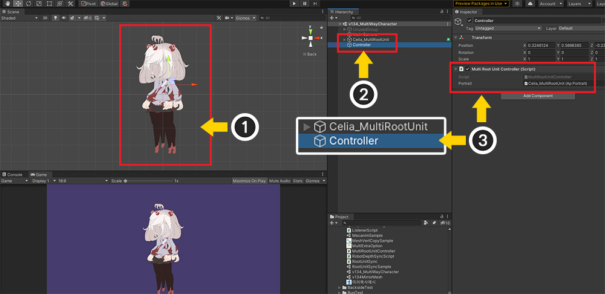
만든 캐릭터와 작성한 스크립트를 유니티 씬에 배치해봅시다.
(1) AnyPortrait 에디터에서 Bake를 하면 캐릭터가 씬에 배치됩니다.
(2) 새로운 GameObject를 생성합니다.
(3) 생성된 GameObject에 앞서 작성한 스크립트를 추가하고, apPortrait를 할당합니다.

게임을 실행하고 스크립트에서 작성한 것과 같이 숫자 1, 2, 3키를 누르면 해당 루트 유닛으로 전환되면서 애니메이션이 실행됩니다.
여러개의 루트 유닛을 사용하는 것은 기존의 제작 방식에서 크게 다르지 않으며, 캐릭터의 방향에 맞는 애니메이션을 재생하도록 스크립트로 작성하면 됩니다.
작업 과정과 스크립트 작성이 쉽고 직관적이라는 것은 이 방식의 장점입니다.
반면에, 방향이 전환되는 애니메이션을 만들기 어렵다는 것이 단점입니다.
만약 방향이 전환되는 애니메이션을 만들고자 한다면, 각 방향에 대한 애니메이션들을 제작하여 순서대로 재생하도록 스크립트를 작성해야합니다.
이러한 특성에서, 이 방식은 탑뷰의 게임에서 효과적으로 사용될 수 있습니다.
방법 2. 여러개의 자식 메시 그룹을 이용하기

두번째 방법은 "하나의 루트 유닛이 되는 메시 그룹"에 "여러개의 자식 메시 그룹"을 추가하는 방법입니다.
렌더링 되어야 하는 자식 메시 그룹만 보이게 만들고, 나머지 메시 그룹을 숨겨서 마치 캐릭터의 방향이 바뀌도록 만들 수 있습니다.
(1) 앞의 설명과 동일해보이는 캐릭터이지만, 하나의 메시 그룹에 3개의 메시 그룹들이 자식 메시 그룹으로 등록되어 있습니다.
(2) 각각의 메시 그룹들은 독립적으로 메시들과 본을 가지고 있으며, "Rigging 모디파이어"가 적용된 상태입니다.

부모-자식 메시 그룹들을 이용하여 작업하는 경우, 어느 메시 그룹에 어떤 모디파이어를 추가해야하는지 결정해야합니다.
자식 메시 그룹들이 각각 본을 가지면서 독립적인 움직임을 가지는 경우 특히 주의해야합니다.
저희는 위와 같이 모디파이어를 구성할 것을 권장합니다.
작업의 편의성, 일관성, 성능을 모두 고려할 때, 루트 메시 그룹에 Morph, Transform, Color Only 모디파이어를 추가하는 것이 좋습니다.
특히 Animation 모디파이어들은 오직 루트 메시 그룹에만 추가할 수 있습니다.
(만약 실수로 Animation 모디파이어를 자식 메시 그룹에 추가하고 애니메이션을 만들었다면 관련 페이지의 해결 방법을 참고해주세요.)
Rigging, Physics 모디파이어는 외부 데이터(컨트롤 파라미터, 애니메이션)에 관계없이 동작하므로 본이나 메시를 가진 자식 메시 그룹에 추가하는 것이 더 편리할 것입니다.
특히 자식 메시 그룹이 본을 가진 경우엔 Rigging 모디파이어를 자식 메시 그룹에 추가하는 것이 편리하게 작업할 수 있습니다.
다만, 대상 메시에 2개 이상의 Rigging 모디파이어가 적용되는 경우 문제가 발생하므로 주의하시길 바랍니다.
부모 메시 그룹에 이 모디파이어들을 추가해서 적용해도 상관은 없습니다.
Controller 모디파이어들(Morph, Transform, Color Only)을 자식 메시 그룹에 추가하는 것은 가능하긴 하지만 저희는 권장하지 않습니다.
저희의 경험상, 부모-자식 메시 그룹에 모디파이어를 복합적으로 등록하였다가 의도치 않은 움직임에 어려움을 겪는 경우가 많이 있었습니다.
그래서 가능하면 외부 데이터들에 의한 변형은 루트 메시 그룹에서 일관적으로 편집하시는 것을 권장합니다.
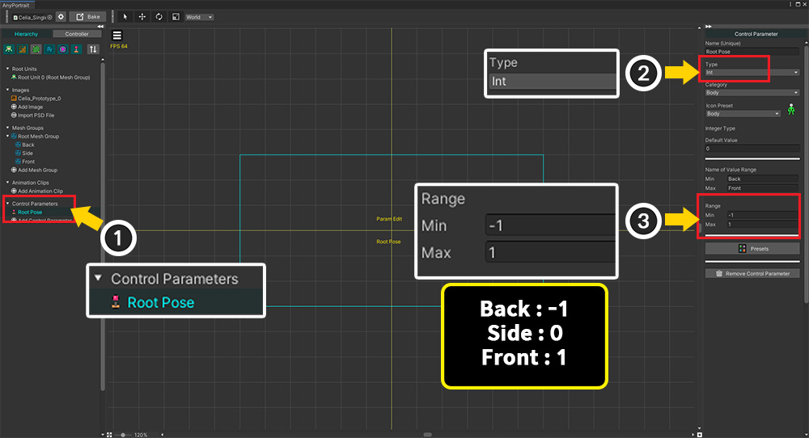
이 방식에서 가장 중요한 포인트는, "컨트롤 파라미터를 이용해서 보여지는 자식 메시 그룹을 전환하는 것"입니다.
이것은 앞의 첫번째 방식에서 애니메이션을 실행하여 루트 유닛을 전환하는 것에 대응됩니다.
(1) 새로운 컨트롤 파라미터를 추가합니다. 여기서는 "Root Pose"라는 이름의 컨트롤 파라미터를 만들었습니다.
(2) 컨트롤 파라미터의 타입을 Int로 설정합니다.
(3) 값의 범위를 -1 ~ 1로 설정했는데, 이는 각각 "후면 : -1", "측면 : 0", "정면 : 1"로 매핑하기 위함입니다.
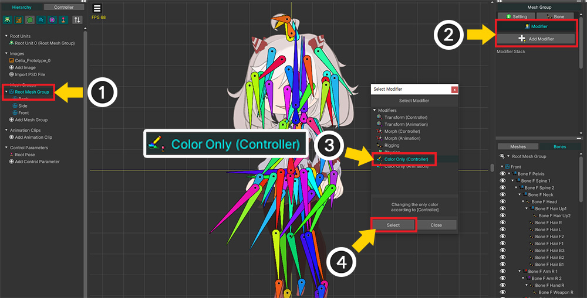
(1) 루트 메시 그룹을 선택합니다.
(2) Modifier 탭을 선택하고 Add Modifier 버튼을 누릅니다.
(3) "Color Only (Controller)" 모디파이어를 선택하고 (4) Select 버튼을 누릅니다.
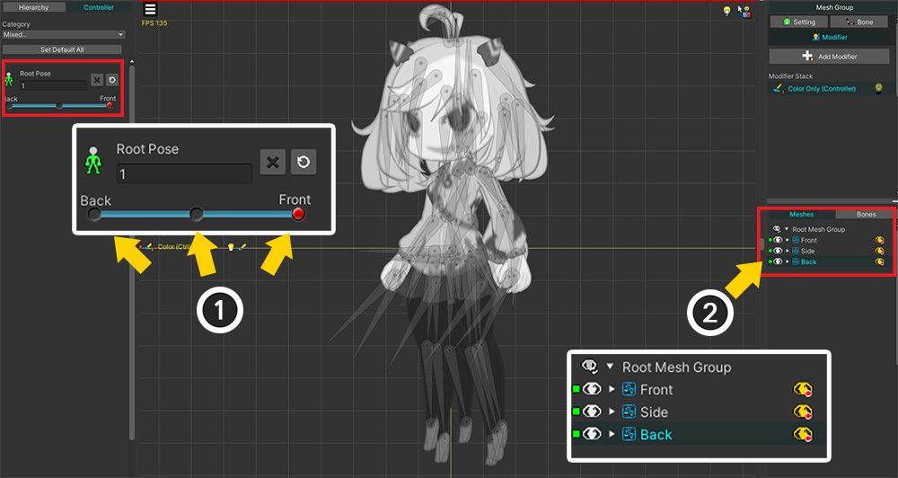
(1) 컨트롤 파라미터에 3개의 키를 등록합니다.
(2) 자식 메시 그룹들을 모디파이어에 등록합니다.

컨트롤 파라미터에 따라서 보여지는 자식 메시 그룹이 바뀌도록 만듭니다.
값이 -1일 때는 후면, 0일 때는 측면, 1일 때는 정면만 보이도록 설정합니다.
이제 "Root Pose" 컨트롤 파라미터를 제어하여 캐릭터의 방향이 바꿀 수 있게 되었습니다.
만약 캐릭터의 방향이 변환되는 과정의 모습을 표현하고자 한다면 아래와 같이 설정해주세요.
- 컨트롤 파라미터의 타입을 "Int"가 아닌 "Float"로 설정합니다.
- Color Only 모디파이어 대신 Morph 모디파이어를 이용하고, Color Option과 Toggle Visibility without blending을 활성화합니다. (관련 페이지)
- 컨트롤 파라미터의 키를 더 추가하고 버텍스를 편집하여 중간 모습을 만들어주세요.
이어지는 과정을 설명 하기에 앞서서, 여러개의 자식 메시 그룹을 이용한다면 다음의 기능들에 대한 설명을 먼저 확인해주세요.
다른 모디파이어 편집시 자식 메시 그룹이 전환되지 않는 경우
편집 모드를 켜면 기본적으로 다른 모디파이어나 다른 컨트롤 파라미터가 동작하지 않습니다.
따라서 이 페이지에서 만들었던 "Root Pose 컨트롤 파라미터로 보여지는 자식 메시 그룹 전환하기"가 동작하지 않게 됩니다.
오른쪽 Hierarchy UI의 "초록색 눈 아이콘"을 눌러서 강제로 보여지게 만들 수는 있지만, 이것은 일시적인 방법이므로 작업은 여전히 번거롭습니다.
두가지 방법을 통해서 이 문제를 해결해봅시다.

설명을 위해서 별도의 Morph 모디파이어를 추가해보겠습니다.
위와 같이 새로운 컨트롤 파라미터와 Morph 모디파이어를 추가했습니다.

Morph 모디파이어를 이용하여 캐릭터의 뿔의 길이를 변경해보았습니다.
먼저, "정면" 메시 그룹의 "뿔" 메시를 변형했습니다.

"정면"의 메시를 변형했으니, "측면"의 메시를 변형하려고 합니다.
(1) 보여지는 자식 메시 그룹을 "측면"으로 바꾸기 위해서 "Root Pose" 컨트롤 파라미터의 값을 바꾸었습니다.
(2) 그렇지만 자식 메시 그룹은 계속 "정면"이 보여지고 있어서 다른 방향의 메시를 편집하기가 어렵습니다.
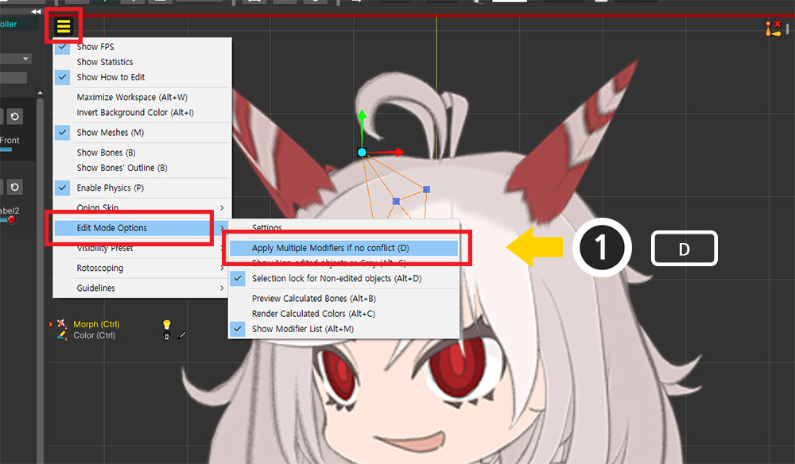
(1) "보기 메뉴 > Edit Mode Option > Apply Multiple Modifiers if no conflict"를 켭니다. (단축키 : D )

이제 편집 모드에서도 다른 모디파이어가 동작하게 되어 "Root Pose" 컨트롤 파라미터에 따라 "측면", "후면"이 보여지도록 만들 수 있습니다.
(편집 모드 옵션에 대한 자세한 설명은 관련 페이지에서 보실 수 있습니다.)

또는 보기 프리셋 (관련 페이지)을 이용해서 강제로 자식 메시 그룹을 전환할 수 있습니다.
보기 메뉴 > Visibility Preset > Settings를 통해서 보기 프리셋 설정 화면을 엽니다.
(1) 새로운 규칙을 만듭니다.
(2) Custom 방식으로 설정하고, 필요한 경우 단축키를 지정합니다.
(3) 루트 메시 그룹을 선택합니다.
(4) 이 규칙이 적용되면 "정면 (Front)" 메시 그룹만 보여지게 할 것이므로 Front 메시 그룹이 강제로 보여지도록 설정합니다.
(5) 반대로 "측면 (Side)"와 "후면 (Back)" 메시 그룹은 강제로 숨겨지도록 만듭니다.
동일한 방식으로 규칙들을 더 추가하여 각각의 규칙에 의해서 "정면", "측면", "후면"이 보여지도록 만듭니다.

보기 메뉴 > Visibility Preset > Enable Preset을 활성화(단축키 : I )하고 필요한 규칙을 선택하면, 해당 메시 그룹만 보여지도록 만들 수 있습니다.
규칙에 설정된 단축키를 이용하면 작업 속도를 높일 수 있을 것입니다.
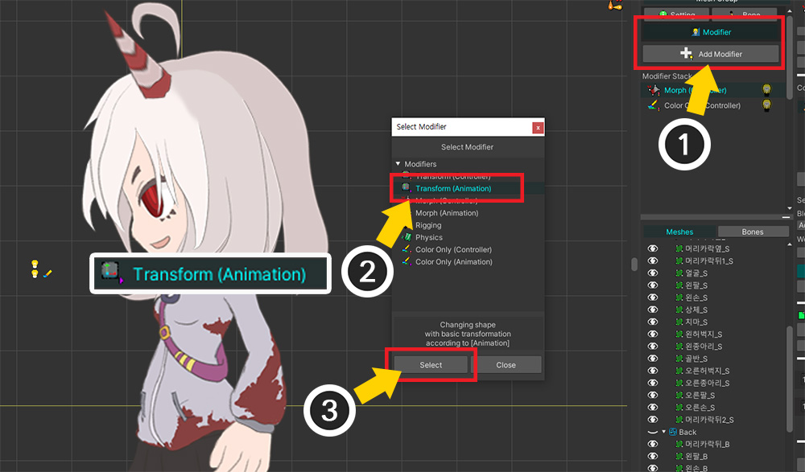
본 애니메이션을 만들어 봅시다.
(1) 루트 메시 그룹을 선택하고, Modifier 탭에서 Add Modifier 버튼을 누릅니다.
(2) Transform (Animation) 모디파이어를 선택하고 (3) Select 버튼을 누릅니다.

(1) 새로운 애니메이션을 추가합니다.
(2) 애니메이션에 이름을 지정한 후, Select Mesh Group 버튼을 누릅니다.
(3) 메시 그룹들이 나타나는데, 루트 유닛이 될 수 없는 자식 메시 그룹은 선택할 수 없음을 볼 수 있습니다. 루트 메시 그룹을 선택합니다.
(4) Select 버튼을 누릅니다.

(1) Add Timeline 버튼을 누릅니다.
(2) 자식 메시 그룹을 전환하기 위해 Control Parameters 타임라인을 먼저 추가합니다.
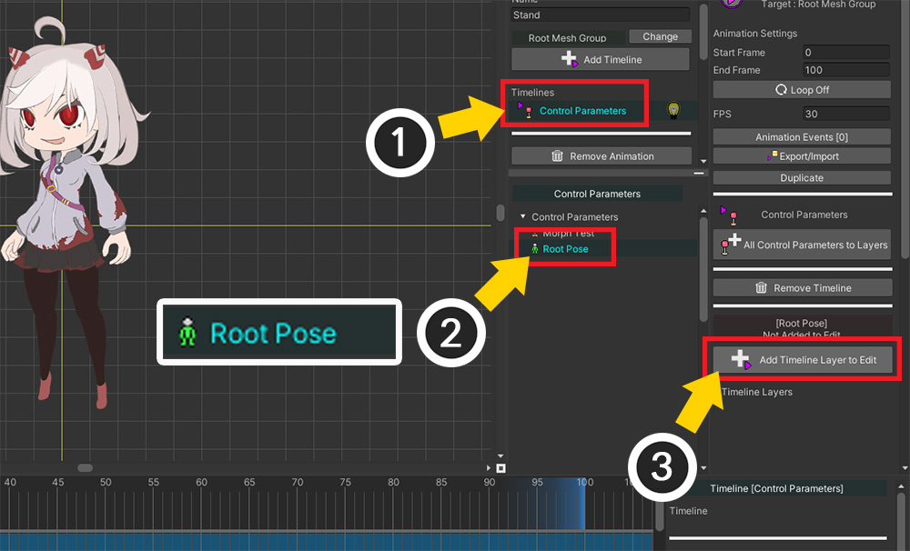
(1) 추가된 Control Parameters 타임라인을 선택합니다.
(2) 앞서 생성한 "Root Pose" 컨트롤 파라미터를 선택합니다.
(3) Add Timeline Layer to Edit 버튼을 눌러서 타임라인에 컨트롤 파라미터를 등록합니다.

(1) 다시 Add Timeline 버튼을 누릅니다.
(2) 본 애니메이션을 만들기 위해 Modifier : Transform (Animation)을 선택하여 추가합니다.

(1) 추가된 Transform (Animation) 타임라인을 선택합니다.
(2) Bones 탭을 선택합니다.
(3) All Bones to Layers 버튼을 누릅니다.
(4) 안내 메시지에서 Okay 버튼을 눌러서 모든 본들을 타임라인에 등록합니다.

이제 애니메이션을 만들어봅시다.
본 애니메이션을 만들기에 앞서, 보여지는 자식 메시 그룹, 즉 캐릭터의 방향을 먼저 키프레임으로 설정해봅시다.
(작업자의 스타일에 따라서는 이 페이지의 설명과 다르게 메시 그룹의 렌더링 여부와 본 애니메이션을 동시에 편집할 수도 있습니다.)
(1) 애니메이션 편집 모드를 켜고, Control Parameters 타임라인의 "Root Pose"를 선택합니다.
(2) 키프레임들을 추가합니다.

(1) 키프레임을 선택하고 (2) 컨트롤 파라미터의 값을 지정합니다.
(3) 위와 같이 "정면 > 측면 > 후면 > 측면"이 반복해서 보여지도록 키프레임을 설정했습니다.
(4) 애니메이션을 재생시켜보면 작업 공간에서 "Root Pose"의 값에 따라 캐릭터의 방향이 전환되는 것을 볼 수 있습니다.
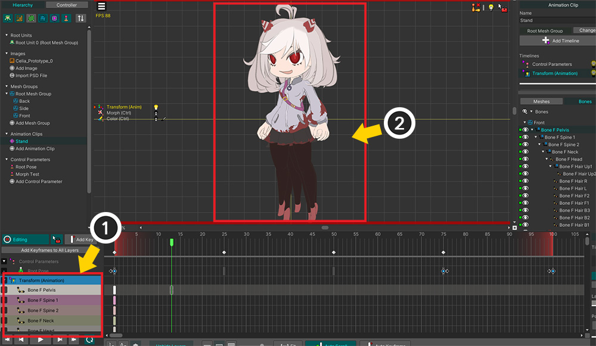
다음은 본 애니메이션을 만드는 작업입니다.
(1) Transform (Animation) 타임라인을 선택하고 편집 모드를 켭니다.
(2) 그런데 이 상태에서는 "Root Pose" 컨트롤 파라미터가 적용이 안되서 작업 공간에 모든 메시 그룹들이 보여지는 문제가 발생합니다.

이 페이지의 앞에서 설명한 방법으로 이 문제를 해결합니다.
(1) 보기 메뉴 > Edit Mode Options > Apply Multiple Modifiers if no conflict (단축키 : D )를 활성화합니다.

이제 편집 대상이 아닌 타임라인도 동작하여, 현재 상태에 맞는 자식 메시 그룹만 작업 공간에 보여집니다.

본들이 작업 공간에 보여지지 않도록 설정한 상태였습니다.
B 키를 누르거나 보기 메뉴 > Show Bones를 켜서 본들을 보이게 해봅시다.
그런데 출력되는 자식 메시 그룹과는 별개로 모든 본들이 보여집니다.
너무 많은 본들이 어지럽게 작업 공간에서 보여지므로 편집을 하기가 어렵습니다.

보기 프리셋을 이용해봅시다.
(1) 보기 메뉴 > Visibility Preset > Settings를 선택합니다.

(1) 새로운 규칙을 추가합니다.
(2) 이 규칙의 방식을 "Show Bones If Mesh Group Visible"로 설정합니다.
이 옵션은 본들이 속한 메시 그룹이 렌더링 될 때만 본들이 작업 공간에 렌더링되도록 만듭니다.

생성된 규칙을 적용합니다.
(1) 보기 메뉴 > Visible Preset에서 생성한 규칙을 선택하고 (2) Enable Preset을 눌러서 활성화 합니다. (단축키 : I )
(3) 애니메이션을 재생하면 보여지는 자식 메시 그룹에 대한 본들만 작업 공간에 보여집니다.

모든 준비가 끝났으니 이제 본 애니메이션을 만들 차례입니다.
한 애니메이션 클립 내에서 캐릭터가 방향을 바꿔가면서 움직이도록 모션을 만들 수 있습니다.
이 과정은 캐릭터가 어떤 모션을 가지는지, 여러분이 애니메이션을 어떻게 만드는지에 따라 차이가 있을 것입니다.
다음의 작업 과정을 참고하여 모션을 만들어보세요.

(1) Transform 타임라인 및 타임라인 레이어를 선택하고 키프레임을 생성한 후, (2) 캐릭터의 포즈를 수정합니다.

(1) 캐릭터의 방향이 바뀌기 직전에 키프레임들을 생성합니다.
(2) 캐릭터의 이어지는 다음 방향의 포즈와 최대한 비슷하게 포즈를 수정합니다.

다음 프레임으로 이동하여 캐릭터의 방향이 바뀌었을 때, 이전 프레임과 포즈의 차이가 적을 수록 애니메이션이 자연스럽습니다.
이전 캐릭터 방향의 마지막 키프레임들과 다음 방향의 첫번째 키프레임들의 위치가 같아진다면, 더 자연스러운 방향 전환이 됩니다.

본 애니메이션과 컨트롤 파라미터를 조합하여 캐릭터가 회전하는 것 같은 애니메이션을 위와 같이 간단히 만들어보았습니다.
더 많은 키프레임, Morph 모디파이어, 회전에 적합한 캐릭터 이미지 등이 보태진다면 훨씬 높은 퀄리티의 작품을 만들 수 있을 것입니다.
캐릭터의 방향이 자연스럽게 전환되도록 컨트롤 파라미터와 포즈를 설정하는 것은 많은 노하우를 필요로 합니다.
기능에 대한 저희의 설명 이외에도 애니메이션을 직접 만들어보시면서 많은 경험을 쌓고 멋진 작품을 만들어보세요.
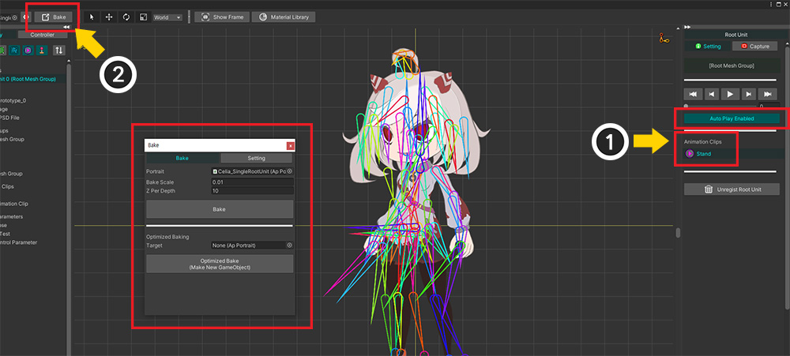
완성된 캐릭터 애니메이션을 유니티 씬에 확인해봅시다.
(1) 루트 유닛을 선택한 화면에서 애니메이션 클립을 선택하고 Auto Play를 활성화하여 자동으로 애니메이션이 재생되도록 만듭니다.
(2) Bake를 실행합니다.

완성된 애니메이션이 유니티 씬에서 재생되는 것을 볼 수 있습니다.
여러개의 자식 메시 그룹을 이용하는 방법은 설명에서 보듯이 수많은 객체들을 동시에 편집해야합니다.
작업이 다소 어렵고 설정해야하는 것들이 많은 것이 필연적인 단점입니다.
하지만 이러한 어려움을 이겨내면 하나의 애니메이션 내에서 캐릭터 방향이 바뀌는 것을 표현할 수 있다는 큰 장점을 얻을 수 있습니다.
사이드뷰 액션 게임에서 캐릭터가 달려가거나 싸우고 점프하고 뒤돌아보는 등의 복합적인 모션을 만들기에 적절한 기법입니다.
현재 보여지는 자식 메시 그룹을 확인하기
게임에서 캐릭터의 방향이 바뀌면 장착된 아이템 이미지를 바꾸는 등의 처리가 필요할 수 있습니다.
이 경우에 필요한 설정과 스크립트 예시를 설명드립니다.
이 페이지에서 캐릭터의 방향을 바꾸는 컨트롤 파라미터인 "Root Pose"의 값을 실시간으로 확인하는 스크립트를 작성해봅시다.
using UnityEngine;
using AnyPortrait;
public class GetRootPoseScript : MonoBehaviour
{
public apPortrait portrait;
// Root Pose 컨트롤 파라미터 변수
private apControlParam rootPose;
// GUI에서 확인할 현재 캐릭터 방향의 이름
private string poseName = "";
void Start()
{
// Root Pose 컨트롤 파라미터를 가져와서 변수로 저장합니다.
rootPose = portrait.GetControlParam("Root Pose");
}
//값을 확인하는 것은 Update가 아닌 LateUpdate여야 합니다.
void LateUpdate()
{
// 현재의 컨트롤 파라미터의 값을 확인합니다. Root Pose가 Int 타입이었으므로 Int 값을 가져옵니다.
int currentPose = rootPose.IntValue;
// 컨트롤 파라미터의 값에 할당된 캐릭터의 방향을 문자열로 저장합니다.
switch (currentPose)
{
case -1: poseName = "Back"; break;
case 0: poseName = "Side"; break;
case 1: poseName = "Front"; break;
}
}
private void OnGUI()
{
// 문자열로 저장된 캐릭터의 방향을 유니티 화면에 출력합니다.
GUI.Label(new Rect(10, 10, 500, 20), "Current Pose : " + poseName);
}
}
위 스크립트를 보면 Update가 아닌 LateUpdate에서 컨트롤 파라미터의 값을 확인하는 것을 알 수 있습니다.
AnyPortrait의 업데이트는 Update가 아닌 LateUpdate에서 동작하기 때문입니다.
이것은 다른 스크립트의 처리가 완료된 이후에 동작하도록 설계되었기 때문입니다.
(유니티의 애니메이션 시스템이 스크립트보다 나중에 동작하는 것과 같은 이유입니다.)
따라서 반대로 AnyPortrait의 업데이트 직후의 값을 확인하려면 LateUpdate에서 코드가 동작하도록 작성해야합니다.

(1) 유니티 씬으로 돌아와서, 새로운 GameObject를 만듭니다.
(2) 스크립트를 추가하고, 캐릭터를 apPortrait 변수에 할당합니다.
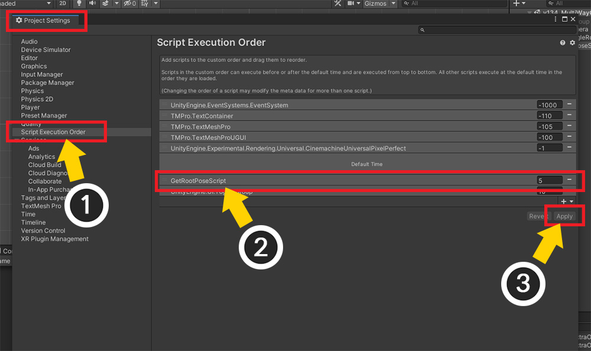
추가적으로 설정해야하는 과정이 있습니다.
LateUpdate에서 코드가 실행되더라도, "스크립트 호출 순서"에 따라서 AnyPortrait의 업데이트보다 스크립트가 먼저 동작할 수 있습니다.
따라서 AnyPortrait 업데이트보다 늦게 실행되도록 "스크립트 호출 순서"도 수정해야합니다.
(이와 관련해서는 관련 페이지에서도 확인해볼 수 있습니다.)
(1) 유니티의 설정 중 Project Settings > Script Execution Order를 선택합니다.
(2) 작성한 스크립트를 추가하고, Default Time보다 이후에 실행되도록 순서를 변경합니다.
(3) Apply 버튼을 누릅니다.
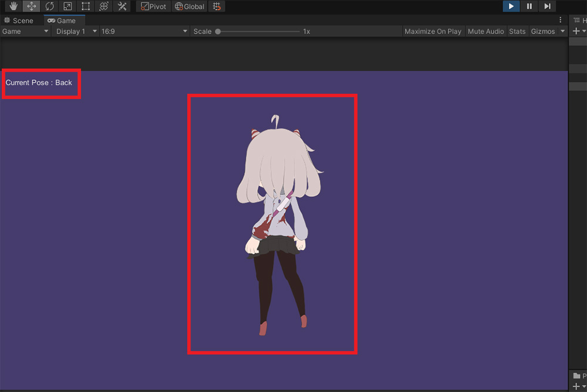
게임을 실행하면 캐릭터의 방향을 스크립트가 인식하여 화면에 출력하는 것을 볼 수 있습니다.